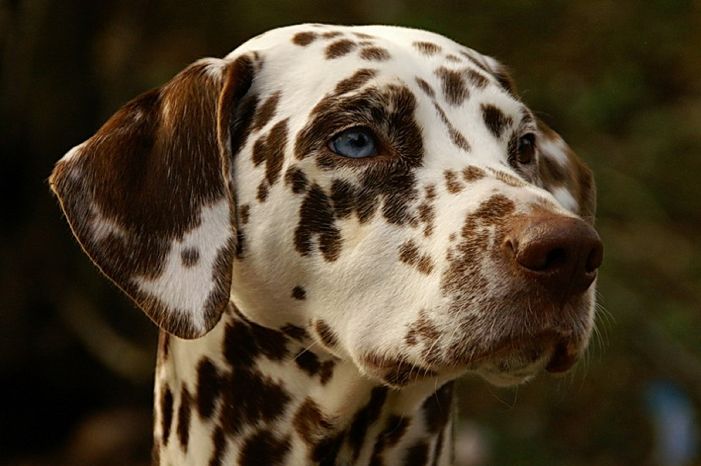

Эта страница про Далматинца
Видео про Далматинцов
Звуки Далматинца
Место памятника Далматинца

Далматин — достаточно крупная, сильная и выносливая собака, способная преодолевать большие расстояния. Пропорции тела весьма гармоничны. Отношение длины корпуса к высоте в холке составляет 10:9, длина черепа и длина морды 1:1. Темперамент далматина очень уравновешенный. У этой породы собак имеется одна особенность, которая должна быть определяющей в породе. Нос у чёрно-пятнистых собак должен быть всегда чёрный, у коричнево-пятнистых — всегда коричневый. Губы не должны быть отвисшими, желательна полная их пигментация, хотя допускается и частичная. Челюсти сильные, с безупречным ножницеобразным прикусом. Желателен полный комплект из 42 зубов в соответствии с зубной формулой. Любое отклонение от правильного прикуса считается пороком, не позволяющим использовать собаку в племенном разведении.
Глаза имеют тёмно-коричневый цвет, у чёрно-пятнистых собак светло-коричневый, иногда встречаются голубоглазые.
У коричнево-пятнистых допускаются желтовато-коричневые оттенки. Обводка века сплошная, без разрывов и пятен. Веко должно прилегать к глазному яблоку.
Уши у собак этой породы посажены довольно высоко, среднего размера, широкие у основания, желательно пятнистые, но могут иметь мраморный рисунок, прилегают к щекам.
Хвост примерно достигает скакательного сустава, в спокойном состоянии держится вниз, в движении поднимается, но не должен закручиваться и держаться вертикально. На хвосте желательно наличие пятен.
Движения свободные, активные, с широким и длинным шагом. Если смотреть на собаку этой породы сзади, конечности должны двигаться совершенно параллельно, задние должны ступать в след передних. Короткий, семенящий шаг считается неправильным.
Шерсть густая, короткая и жёсткая, основной окрас белый, пятна по белому фону должны быть чёткими, круглыми (размерами с двухрублёвую монету), как можно более равномерно распределены, но могут сливаться друг с другом.
Как и любая гладкошерстная собака, линяет круглый год. При этом окрас может меняться. Далматин чистоплотен, не имеeт запаха «псины». Высота в холке кобелей составляет примерно 56—62 см, сук — 54—60 см. Масса тела — приблизительно 24—32 кг.
